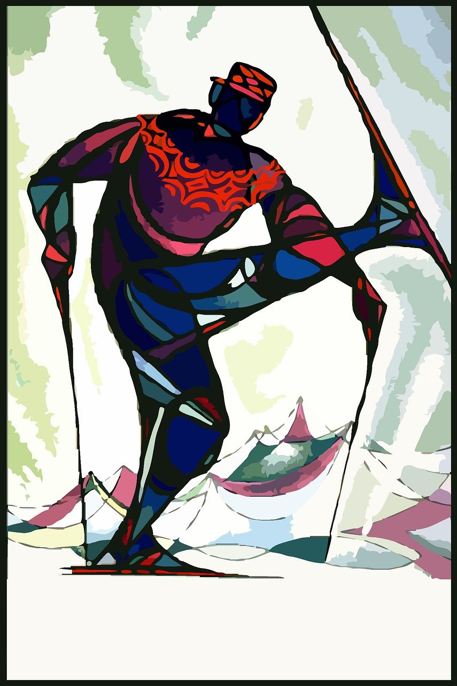
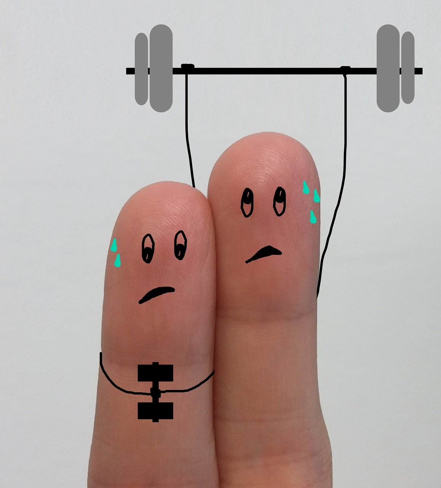

Mine interesser
Slalåm

Slalåm er en type alpint der man kjører ned en bakke og svinger mellom porter som står
tett. Det krever
god balanse, raske reflekser og presis styring. Man bruker korte ski og beskyttelsesutstyr for å kunne
ta portene effektivt. Sporten går på tid, og små feil kan påvirke resultatet mye.
Jeg har slalåm som hobby, og liker det fordi det gir både fart og utfordring. Det er gøy å
kjenne at man
blir bedre, og det er motiverende å kjøre sammen med venner. I tillegg er det fint å være ute i naturen
om vinteren. Slalåm gir meg både trening og glede.
Trening på sats

Styrketrening handler om å gjøre kroppen sterkere med vekter, egen kroppsvekt eller
apparater, og øvelser som knebøy og pull-ups gir både
muskler og energi. Det forbedrer holdning, forebygger skader og gir mer fokus, som er perfekt for oss
som sitter mye foran PC-en.
Jeg liker det fordi det gir mestringsfølelse og motivasjon når man ser fremgang. Det er
også sosialt og gir en god pause fra skole og skjerm, samtidig som det gir struktur og overskudd i
hverdagen.
Musikk

Musikk handler om å uttrykke seg gjennom lyd, rytme og melodi, enten man spiller et
instrument,
synger, eller bare lytter aktivt. Å spille piano eller gitar gir en unik følelse av flyt og
tilstedeværelse, og det skjerper både konsentrasjon og kreativitet. Musikk kan roe ned tankene, gi
energi, og skape stemninger som passer til enhver situasjon.
Man kan spille sammen, dele
spillelister, eller oppleve konserter med andre. Musikk gir en verdifull pause fra skole og skjerm,
samtidig som det gir inspirasjon og struktur i hverdagen.